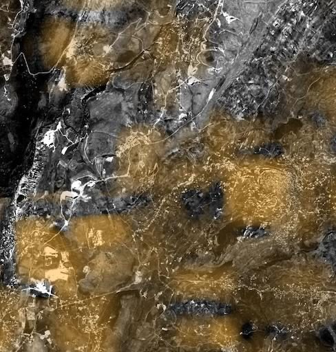

Artificial light at night as a direct proxy for human and industrial activity — super-resolved to 25 m GSD, nightly, worldwide.
Artificial light at night tracks power availability, urban expansion, conflict disruption and economic rhythm. The standard source, NASA's Black Marble, is only 500 m — too coarse to resolve neighbourhoods or single facilities. SkySpera super-resolves nightly VIIRS night-lights to 25 m, updated worldwide whenever skies are clear. At this scale a power outage, a newly electrified district or an idled industrial site becomes individually visible.

Tell us the ground you need to watch — we'll show you what SkySpera can do with it.
Talk to us